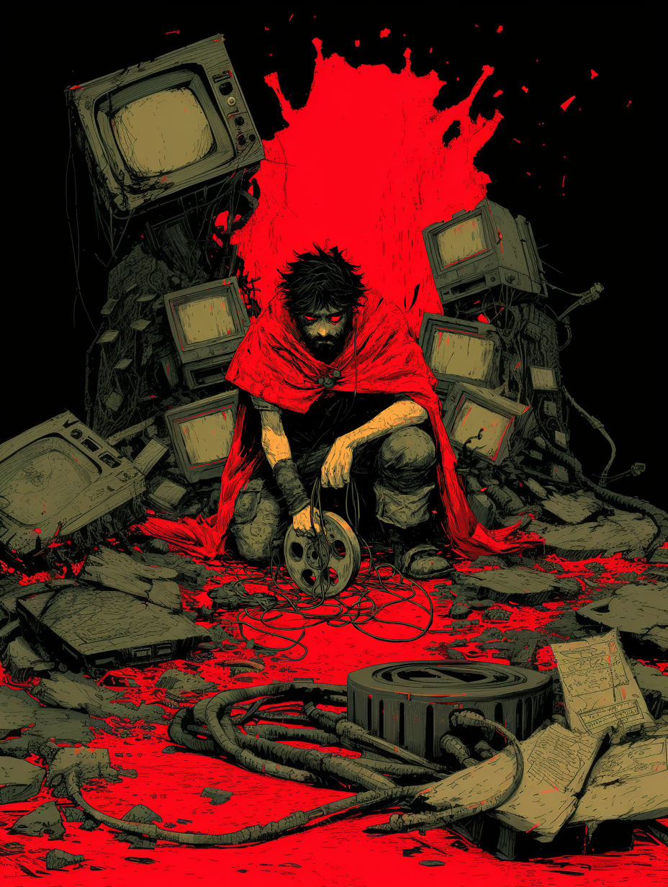

Be human. Make art.
Dispatches from the Loop
A decade of blogs, manifestos and confessions, dragged out of the drawer and pinned to the wall. Nothing here was written to go viral. It was written because it wouldn't stay down.
Be human. Make art.
The illustrated ones — drawn, lettered and laid out page by page. Tap one and it takes the whole screen.
Every issue, pinned and filed by desk. Pinned, not polished. The dates are gone on purpose — none of it aged, and I'd rather you found it by what it's about than by when I was losing my mind that week.
Frankie says it three times in The Daylong Brothers and never once explains it. Here it means: stop scrolling, let the record pick. Drop the needle.

Twenty-odd years of making things, most of it in the dark, a lot of it while the industry I loved was busy collapsing. This is the written half — the blogs nobody asked for, the manifestos I wrote standing up, the bad-brain days I published anyway. None of it was polished. All of it was real.